実際のカタログ(現在の10記事)・実際のスタイルで動きます。各リンクは新しいタブでも開けます。♡を押すと塗りつぶしに変わります。
| 案 | 説明 | 開く |
|---|---|---|
| 現行(比較用) | 現行の正式版と同じ表示(概要は2行で切れる。♡なし)。 | 記事一覧ホーム記事を探す |
| 案A | 現行の構成のまま、概要を全文表示。サムネ88px。♡は再生ボタンの下(上段の右)。 | 記事一覧ホーム記事を探す |
| 案B | サムネ64pxに縮小。♡は概要の行の右端(再生ボタンの真下)。上段は題名・チップ・再生だけ。 | 記事一覧ホーム記事を探す |
| 案C | サムネ72pxに縮小。♡はサムネの右上に重ねる。概要は全幅で全文表示。再生は現行どおり右上。 | 記事一覧ホーム記事を探す |
ホーム・記事を探す・ジャンル別一覧も同じカード部品なので、同じ配置になります。
記事一覧の最初のカードを画面上部に合わせた1画面分です。画面幅を選んでください。
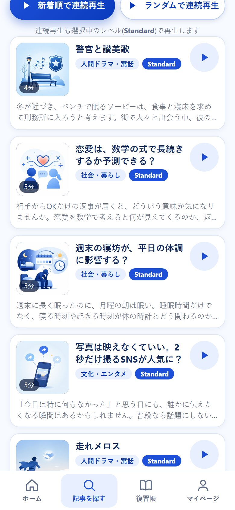
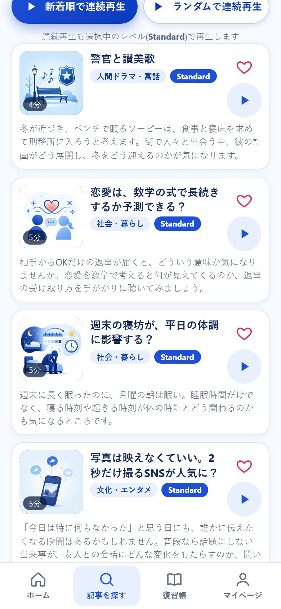
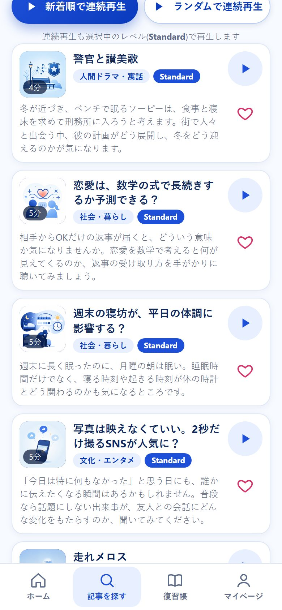
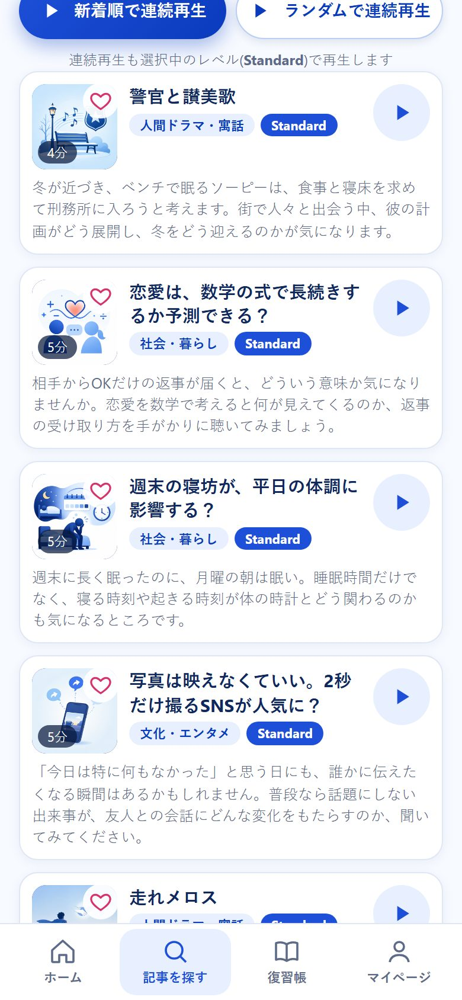
幅320pxと390pxで、該当カードだけを拡大して撮影しました。
概要90字(走れメロス) / 幅320px
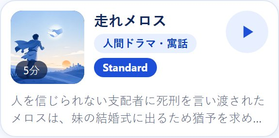
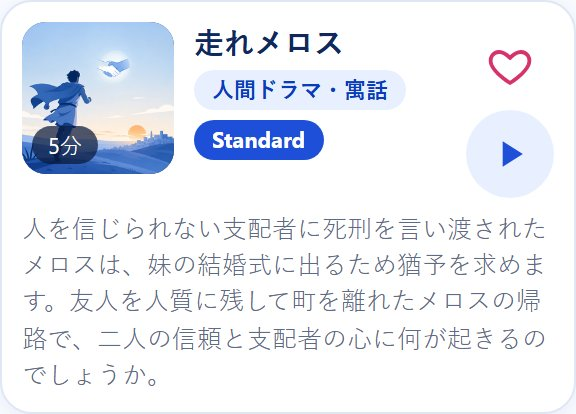
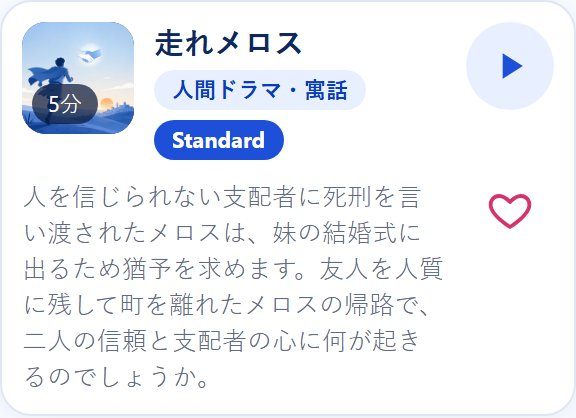
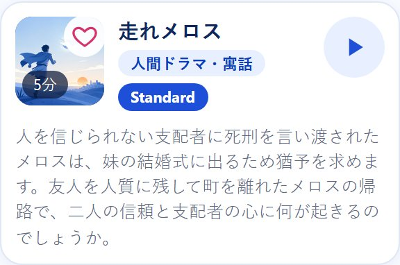
概要90字(走れメロス) / 幅390px
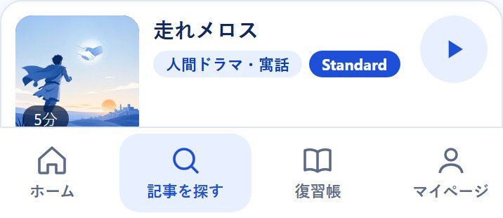
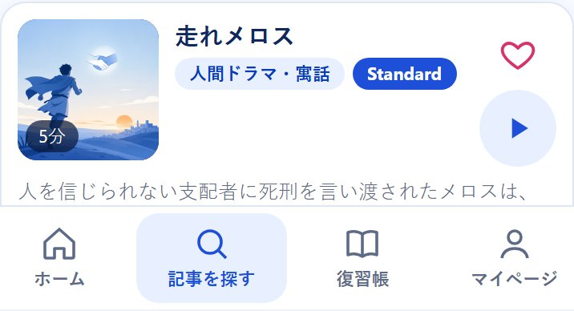
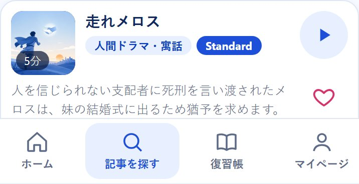
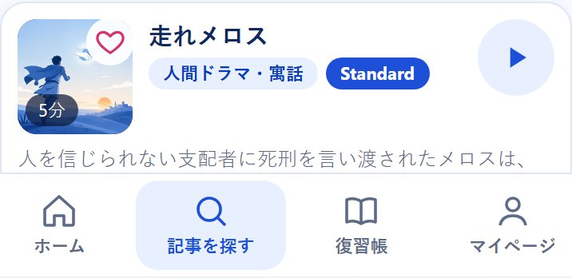
題名が最長(25字)の記事 / 幅320px
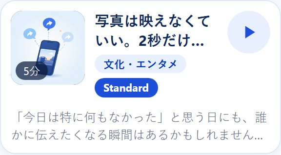
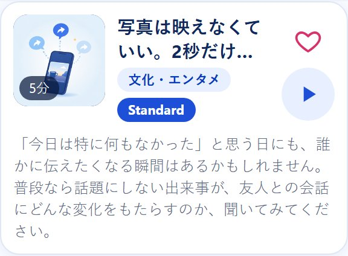
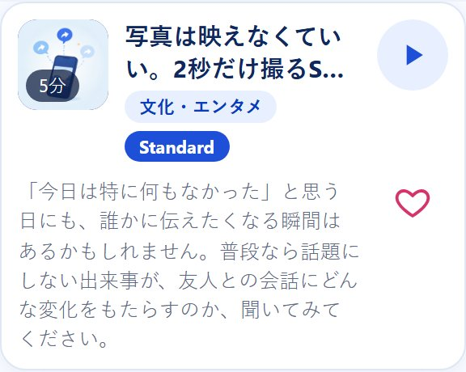
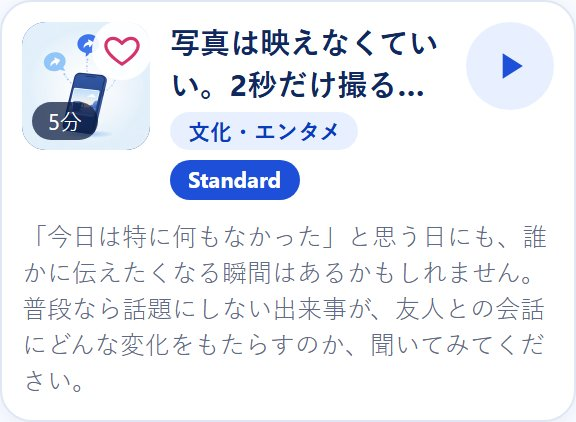
題名が最長(25字)の記事 / 幅390px
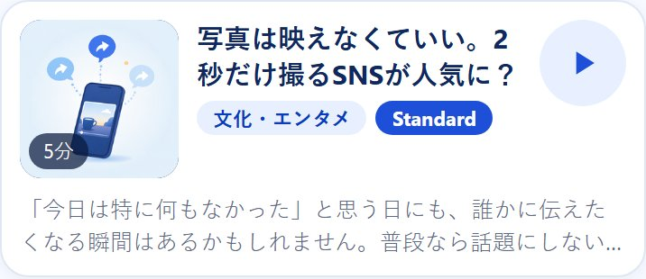
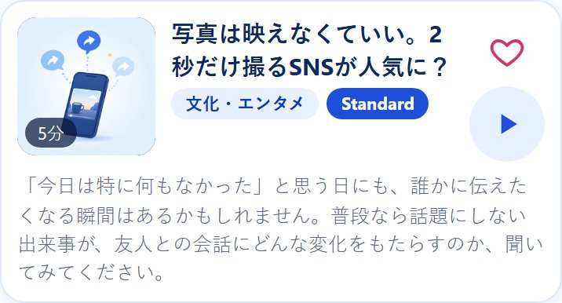
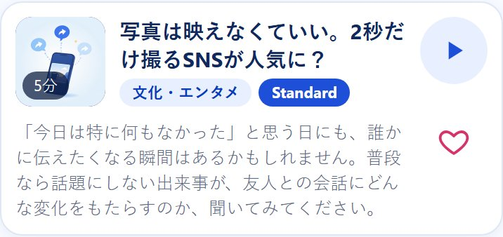
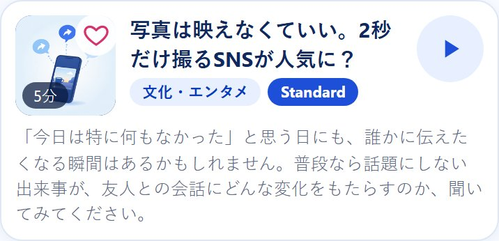
カード高さ=10記事の平均(px)。1画面で完全に見える記事数=記事一覧で最初のカードを上部バー直下に合わせ、下部ナビより上に収まる記事数。概要が切れる記事=概要が2行で切れる(現行)/全文表示(案)。文字サイズは全案で同じ(題名15px・概要12.5px・行間1.45)。
| 幅(px) | 案 | カード高さ 平均(最小〜最大) | 1画面で完全に見える記事数 | 概要の最大行数 | 概要が切れる記事 | 題名が切れる記事 | 概要90字の記事の高さ/行数 |
|---|---|---|---|---|---|---|---|
| 320 | 現行(比較用) | 153(142〜158) | 2 | 5行 | 10/10(最大48字) | 7/10 | 142px/5行 |
| 320 | 案A | 193(174〜210) | 2 | 5行 | 0/10 | 7/10 | 207px/5行 |
| 320 | 案B | 206(190〜228) | 2 | 6行 | 0/10 | 5/10 | 208px/6行 |
| 320 | 案C | 188(172〜210) | 2 | 5行 | 0/10 | 6/10 | 190px/5行 |
| 360 | 現行(比較用) | 144(142〜158) | 4 | 4行 | 10/10(最大42字) | 3/10 | 142px/4行 |
| 360 | 案A | 185(170〜192) | 3 | 4行 | 0/10 | 3/10 | 188px/4行 |
| 360 | 案B | 171(156〜186) | 3 | 5行 | 0/10 | 0/10 | 175px/5行 |
| 360 | 案C | 164(150〜172) | 3 | 4行 | 0/10 | 3/10 | 164px/4行 |
| 375 | 現行(比較用) | 142(142〜142) | 4 | 4行 | 10/10(最大41字) | 0/10 | 142px/4行 |
| 375 | 案A | 181(170〜188) | 3 | 4行 | 0/10 | 0/10 | 188px/4行 |
| 375 | 案B | 166(150〜186) | 3 | 5行 | 0/10 | 0/10 | 175px/5行 |
| 375 | 案C | 159(150〜168) | 4 | 4行 | 0/10 | 0/10 | 164px/4行 |
| 390 | 現行(比較用) | 154(154〜154) | 4 | 4行 | 10/10(最大37字) | 0/10 | 154px/4行 |
| 390 | 案A | 180(174〜192) | 3 | 4行 | 0/10 | 0/10 | 192px/4行 |
| 390 | 案B | 167(150〜183) | 4 | 5行 | 0/10 | 0/10 | 183px/5行 |
| 390 | 案C | 160(154〜172) | 4 | 4行 | 0/10 | 0/10 | 172px/4行 |
| 430 | 現行(比較用) | 154(154〜154) | 4 | 3行 | 10/10(最大30字) | 0/10 | 154px/3行 |
| 430 | 案A | 174(174〜174) | 4 | 3行 | 0/10 | 0/10 | 174px/3行 |
| 430 | 案B | 159(150〜168) | 4 | 4行 | 0/10 | 0/10 | 164px/4行 |
| 430 | 案C | 154(154〜154) | 4 | 3行 | 0/10 | 0/10 | 154px/3行 |
題名が切れる記事は、現行の仕様(題名は2行まで)が幅の狭い端末で効いたもので、案Bも2行までのままです(今回の試作では変えていません)。